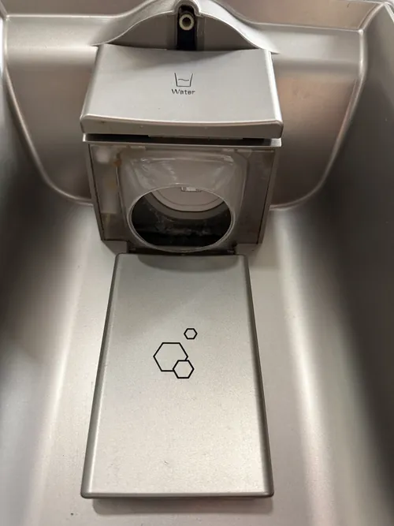

LG Refrigerator Repair: Common Causes of Frost Buildup
Frost buildup inside a refrigerator or freezer is one of the most common problems homeowners encounter. While a small amount of frost may occasionally appear during normal operation, excessive frost accumulation is usually a sign that something within the refrigerator system is not functioning correctly. Over time, frost buildup can restrict airflow, reduce cooling efficiency, increase energy consumption, and place unnecessary strain on important refrigerator components. Understanding the most common causes of frost accumulation can help homeowners recognize potential problems early and determine when professional LG refrigerator repair may be needed.
Modern LG refrigerators are designed to maintain stable temperatures while automatically managing moisture and frost through advanced cooling and defrost systems. When these systems operate properly, frost accumulation remains minimal and does not interfere with appliance performance. However, when one component begins to fail, frost can develop rapidly and create noticeable cooling problems throughout the refrigerator.
One of the most common causes of excessive frost buildup is a faulty defrost system. Modern refrigerators periodically activate a defrost cycle to melt frost that naturally forms on evaporator coils during normal cooling operation. If the defrost heater, defrost sensor, control board, or related components fail, frost may continue accumulating without being removed. As frost grows thicker, airflow becomes restricted and cooling performance begins to decline.

Restricted airflow is another frequent contributor to frost problems. Proper air circulation helps distribute cold temperatures evenly and prevent moisture from collecting on cooling components. If vents become blocked by food containers, packaging, or ice buildup, airflow may decrease significantly. Reduced air movement can create cold spots where frost forms more rapidly and eventually affects refrigerator performance.
Damaged door gaskets are often overlooked when diagnosing frost accumulation. Refrigerator door seals play a critical role in keeping warm, humid air outside the appliance. When a gasket becomes worn, cracked, loose, or damaged, moisture enters the refrigerator each time the cooling system operates. As this moisture contacts cold surfaces, frost begins to form. Over time, even a small air leak can lead to significant frost accumulation inside the freezer compartment.
Frequent door openings may also contribute to frost buildup. Every time the refrigerator or freezer door is opened, warm air enters the appliance. In humid environments, this air contains additional moisture that can eventually freeze on cooling surfaces. While occasional door openings are normal, repeated or prolonged openings may accelerate frost formation and increase the workload on refrigerator components.
Temperature sensor failures can create conditions that encourage frost accumulation. Modern LG refrigerators rely on sensors to monitor temperatures and regulate cooling cycles. If a sensor provides inaccurate information, the refrigerator may cool excessively or fail to manage defrost cycles properly.
Professional LG refrigerator repair often includes testing sensors when frost related problems develop.Evaporator fan problems can also contribute to excessive frost. The evaporator fan circulates cold air throughout the appliance and helps maintain balanced temperatures. If the fan slows down, stops operating, or experiences intermittent failures, airflow may become restricted. Reduced air circulation can allow frost to accumulate around cooling components and interfere with normal refrigerator operation.
Many homeowners are surprised to learn that improper food storage can affect frost formation as well. Large containers placed directly in front of vents may block airflow and create uneven temperature conditions. Proper organization helps maintain consistent air circulation and supports efficient cooling performance throughout the refrigerator.
Defrost drain problems are another possible cause of frost related issues. During normal defrost cycles, melted frost drains safely out of the appliance. If the drain becomes clogged or partially restricted, water may refreeze inside the refrigerator and contribute to additional frost accumulation. In some cases, homeowners may notice both frost buildup and water leaks occurring at the same time.
Electronic control board malfunctions can also affect frost management. Modern refrigerators use control boards to coordinate cooling cycles, fan operation, temperature monitoring, and defrost functions. If the control system cannot manage these processes correctly, excessive frost may develop even when other refrigerator components appear to be functioning normally.
Ignoring frost buildup can lead to larger refrigerator problems over time. Excessive frost restricts airflow, forces cooling systems to work harder, increases energy consumption, and may eventually cause temperature instability throughout the appliance. Early diagnosis helps prevent additional damage and improves long term refrigerator reliability.
Professional LG refrigerator repair focuses on identifying the root cause of frost accumulation rather than simply removing visible ice. Whether the problem involves a defrost system failure, airflow restriction, damaged gasket, sensor issue, or electronic control malfunction, accurate diagnostics are essential for restoring proper refrigerator performance. Understanding the common causes of frost buildup allows homeowners to respond quickly and keep their refrigerator operating efficiently for years to come.